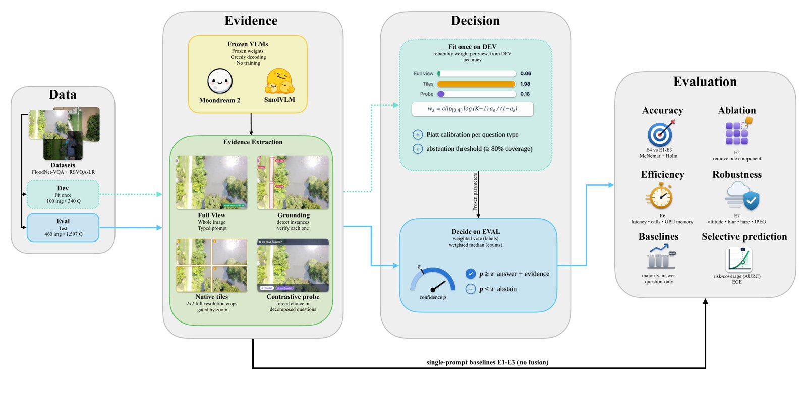

B.Sc. Computer Engineering, UAE University, class of 2027 Research Assistant, Autonomous Systems Lab, UAEU Visiting Researcher, eBRAIN Lab, NYU Abu Dhabi
Can we trust what a vision‑language model says it sees?
My research makes multimodal models answer with evidence, check each other, and know when to abstain, then puts them where errors are costly: on drones, in farms and on coral reefs.
AeroVerify-VLM asks a small VLM the same question through several independent evidence sources, fuses them with reliability weights, and abstains when calibrated confidence is low. With no fine-tuning it adds up to 7.0 points of accuracy on FloodNet aerial VQA.
SemUAV-VLM lets a drone send the smallest message that still lets the ground station act in time, cutting a 130 kB frame to a 1 kB semantic alert.

AeroVerify-VLM: evidence views are weighted by their reliability on a development split, and the model abstains below a calibrated threshold.
In the field
Multi-agent VLMs for crop disease diagnosis
In VIDA+PANDA (Frontiers in Plant Science, 2026), seven vision-language models diagnose crop leaves independently and then debate by name, changing a verdict only when they can cite new visual evidence. Debate lifts the weakest member of the panel by 12.1 points. This work now continues as CropSage, a dual-view handheld system validated on farms in Al Ain and funded by the R2C program.
Under water
Evidence-grounded agents for coral reef health
CoralAgent-TRACE plans a short, question-specific sequence of tools for each reef question and has an independent verifier check every answer against its evidence. On a 100-image CoralVQA development set it beats GPT-5 zero-shot by 3.7 points. Together with my work on underwater image quality, it forms CoralSense AI, supported by a UAEU–Environment Agency Abu Dhabi SDG research grant.
A multi-agent vision-language debate framework for zero-shot crop disease diagnosis. M. Al Juboori, Z. Abbas, Z. Al Aghbari, F. Ullah, M. Ur Rehman. Frontiers in Plant Science 17, 2026. Paper · Code
Conference, accepted
A stacking ensemble framework for underwater coral health assessment using multi-domain handcrafted features. M. Al Juboori, A. S. Aladawi, Z. Al Aghbari, F. Ullah, M. Ur Rehman. CAISAIS 2026, IEEE, to appear.
Underwater image quality assessment using novel domain-specific features and a neural network regressor. M. Al Juboori, M. F. Nasir, Z. Al Aghbari, F. Ullah, M. Ur Rehman. ICATCICT 2026, Springer, to appear.
Under review
CoralAgent-TRACE: An evidence-grounded agentic framework for coral reef health assessment and visual question answering. M. Al Juboori, M. Ur Rehman, Z. Abbas. Frontiers in Marine Science. Code
SemUAV-VLM: Deadline-aware semantic communication for UAV vision over constrained wireless links. M. Al Juboori, T. Almazrouei, F. Ullah, H. El-Sayed, M. Ur Rehman. IEEE Open Journal of Vehicular Technology. Code
Task-oriented semantic communication for adaptive edge-cloud video vision-language model inference.
M. F. Nasir, M. Al Juboori, S. H. Khan, F. Ullah, M. Ur Rehman. IEEE Open Journal of the Communications Society.
From pixels to diagnosis: A survey of vision-language models for plant disease detection.
Z. Al Aghbari, M. Al Juboori, T. Ilyas, F. Ullah, M. Ur Rehman. Smart Agricultural Technology.
Efficient joint trajectory optimization and resource allocation for secure UAV networks: A deep reinforcement learning approach.
A. Alwarafy, M. Hayajneh, M. Al Juboori, A. Almarzooqi, T. Almazrouei, R. Abera, K. Nega. IEEE Transactions on Communications.
Federated and privacy-preserving learning for healthcare and sports analytics: Architectures, trust models, deployment challenges, and future directions.
A. W. Sardar, M. Khan, J. Ahmad, N. Ullah, M. Al Juboori, M. Ur Rehman, F. Ullah. Sensors.
A teal rule marks first-authored work.
Experience
Jun 2026 – now
Visiting Researcher, eBRAIN Lab, NYU Abu Dhabi
With Prof. Muhammad Shafique. Showed that model compression nearly doubles the performance loss of lightweight perception models under adverse conditions, across six datasets and 566K+ images, and built physics- and diffusion-based synthetic data to recover it.
Jan 2026 – now
Research Assistant, Autonomous Systems Lab, UAEU
With Dr. Mobeen Ur Rehman. Seven papers in 2026, four as first author, on agentic and multi-agent VLMs for agriculture, coral reefs and UAVs. Helped secure 750,000+ AED in research funding.
Apr 2025 – Jan 2026
Research Intern, UAEU SURE+ Program
With Dr. Abdulmalik Al Warafy. A PPO-based deep RL framework for secure UAV trajectory design and resource allocation, improving secrecy rate by 12.8% over the strongest DRL baseline.
Jun – Aug 2025
Research Intern, AIRoCS Group, MBZUAI
With Dr. Abdalla Swikir; one of 56 selected from 2,000+ applicants. Learned provably safe obstacle-avoidance policies from demonstration and deployed them on a 7-DoF Franka Emika arm.
Projects and funding
CropSage, founder and lead researcher. TwinView, a dual-view handheld imaging system that returns a diagnosis, severity, visual evidence and a recommended action in seconds. 100,000 AED from the R2C program.
Agri-Sensei, research engineer. A multimodal plant-health pipeline (SAM segmentation, LoRA-tuned LLaVA, retrieval) on a 41,833-image expert benchmark; severity agreement with experts of κ = 0.80 against 0.66 for the best frontier VLM. 650,000 AED with Silal.
CoralSense AI, project lead. End-to-end reef monitoring combining underwater image quality assessment with CoralAgent-TRACE, to be shown at GITEX Dubai 2026.
Dovvi, co-founder and CTO, 2025. Wearable fetal-movement monitoring; 1st place and 150,000 AED at the P2M Startup Competition.
Education and honors
B.Sc. Computer Engineering, United Arab Emirates University, expected May 2027. CGPA 3.95/4.0.
Chancellor's Scholarship for Elite Students (full tuition, merit-based)